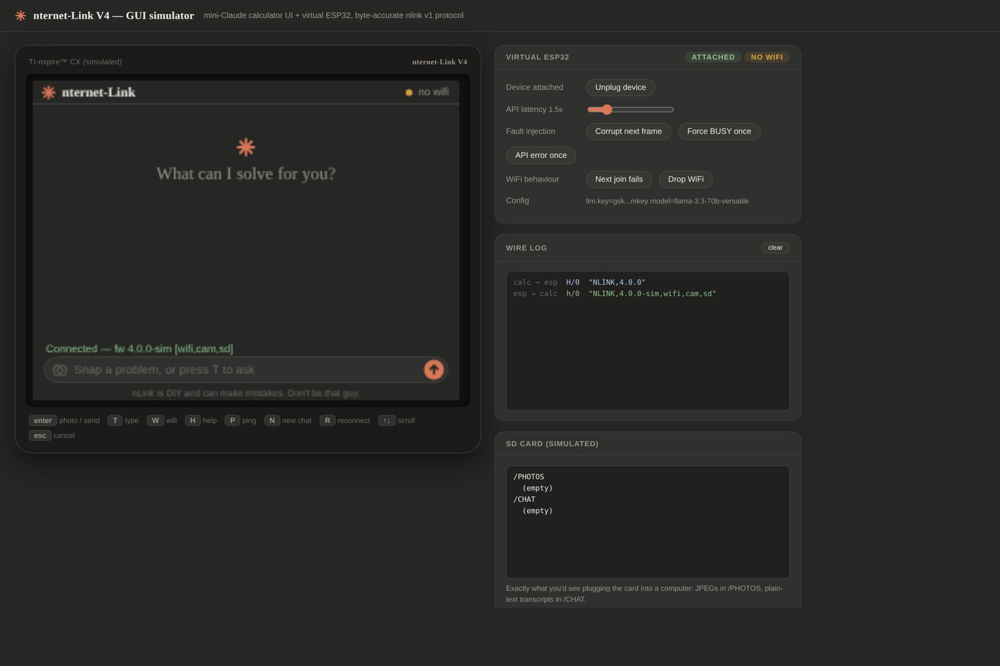
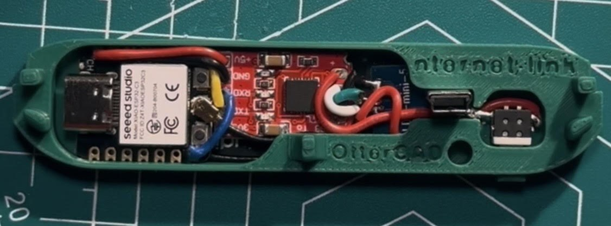
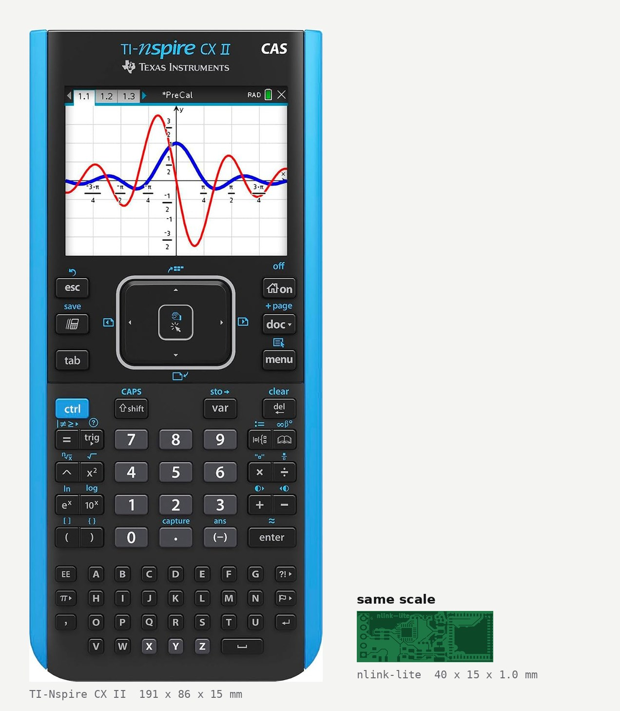
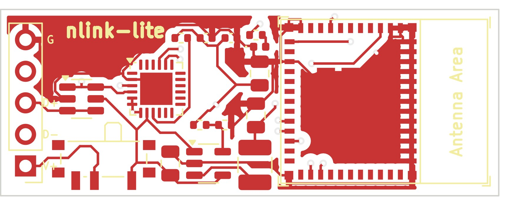

Putting a graphing calculator on the network
New to the Nspire scene? "nternet" is spelled that way on purpose. Nspire plays on "inspire," and community projects drop the first letter to match, the way the Ndless jailbreak plays on "endless." nternet is "internet," Nspire style.
nternet-Link is an open-hardware platform that connects a TI-Nspire to Wi-Fi through a small plug-in ESP32 adapter. I started the project and own the hardware: four generations of adapters, the printed shells, and the custom PCBs, including the smallest and most compact build anyone in the community has made. The V4 firmware and its checksummed serial protocol were written by a contributor from the community that grew around the project; I build the hardware on top of them. The application it ships with is an AI tutor with a camera.

How it works
The calculator supplies the keyboard and screen and runs a Lua app. The device is an ESP32 that bridges USB-serial to Wi-Fi, calls any OpenAI-compatible API, drives an OV5640 camera, and stores photos and chat logs on a microSD card as plain FAT32.
The two sides speak nlink v1, a small framed protocol with CRC16 checks and automatic retries that replaced the garbled, unchecked serial stream of the earlier versions. Credit where it belongs: the protocol and the V4 firmware were written by a member of the community around the project. My side is making the hardware they run on small, reliable, and buildable by anyone from the guides.
Four generations
Hardware



The V2 through V4 adapters are the same idea refined: a plug-in stick on the calculator's mini-USB port, no modification to the calculator, everything inside a printed shell. V4 replaces the hand-wired module-and-bridge sandwich with purpose-built boards. nlink-lite, the chat-only version on an ESP32-C3-MINI-1, is routed and ready to order. nlink-cam, the camera version, is captured in schematic and waiting on layout; its target is a 60 by 12.5 mm stick, which rules out every ESP32-S3 module on the market and pushes it to a bare-chip design with a chip antenna.
The application it carries
Out of the box the calculator runs a chat and tutor app: type a question, or point the camera at a problem and it reads and solves it, with answers and photos saved to the SD card. That app is the demonstration payload; the platform underneath is general, and the repo's V2 docs show it moving strings, files, and arbitrary API requests. As the repo says on its first screen, this is an embedded-systems and networking experiment and is not designed or intended for use during exams.
Demo
The video is the V2 build. V3 and V4 keep the same plug-in form and add the camera; what changed underneath is the protocol, the firmware, and the board designs described above. The V4 simulator at the top of the page runs the current calculator interface against a virtual device, so the whole experience can be tried before any hardware is built.
The part I'm proudest of is that strangers have built this from the documentation alone. Supporting them has been its own engineering lesson: the questions that come back tell you exactly which step of a guide is ambiguous, and V4's simulator exists partly so people can try the whole experience before they buy a single part.
Technical details
| Protocol | nlink v1: framed messages, CRC16, automatic retries. Written by a community contributor; spec in docs/PROTOCOL.md |
|---|---|
| Firmware | Community-written, C++ on PlatformIO, three targets (dev board, nlink-cam, nlink-lite); no API keys in source |
| Calculator side | nlink.lua client library plus demo_app.lua, built into a .tns with TI-Nspire Student Software |
| Boards (mine) | nlink-lite: ESP32-C3-MINI-1, 40 x 15 x 1.0 mm, chat only, routed, gerbers generated. nlink-cam: ESP32-S3, ~60 x 12.5 mm, camera + microSD, schematic captured. nlink-proto and nlink-stick as build/de-risk variants |
| Stick constraints | 4-layer, both sides populated, rotated 24-pin FPC, side-insert microSD, chip antenna keep-out, no USB-C (programming via TC2030 / pogo pads) |
| Simulator | Single self-contained HTML file: calculator UI + virtual ESP32, byte-accurate protocol, fault injection (corrupt frame, BUSY, API error, Wi-Fi drop, unplug), decoded wire log, simulated SD card |
| Status | V2 adapters built and in use; nlink-lite routed and ready to fabricate; nlink-cam in layout |
| Links | github.com/nspired-Hackers/nternet-Link · V2 demo video · Thingiverse |